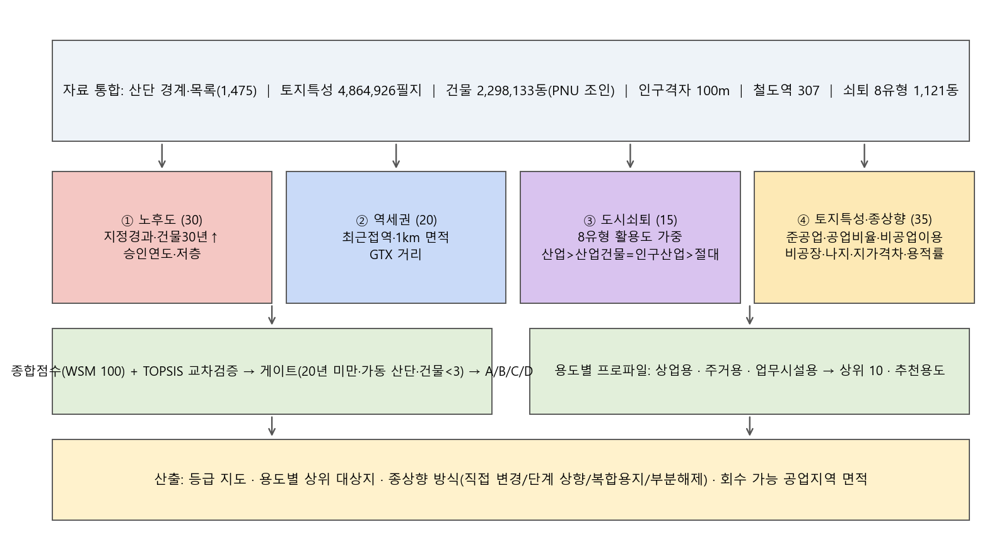
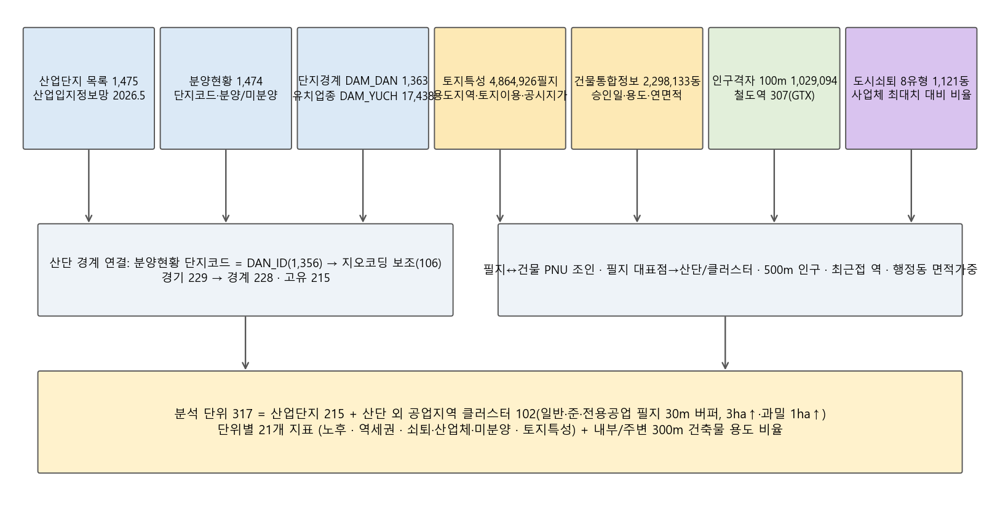
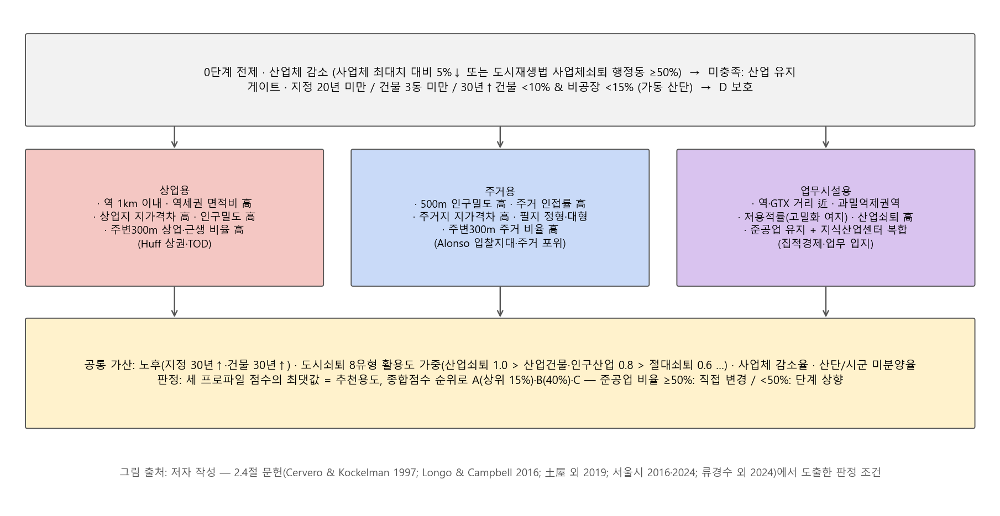
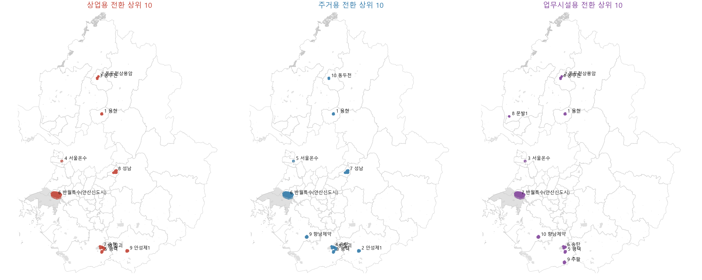
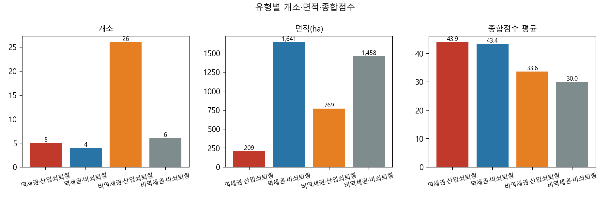

[경기도 노후 산업단지 — 어디를, 무엇으로 바꿀 것인가]
자료 기준: 2026-09-18 v6 · 경기도 소재 산단 215곳 + 산단 밖 공업지역 클러스터 102곳 · 미분양 분양현황 2026.7
첨단산업단지를 새로 짓는 데 필요한 공업지역 물량을, 산업 기능을 잃은 노후 산단과 공업지역의 전환으로 되찾을 수 있을지 묻는 분석입니다. 산단마다 노후도 · 역세권 · 도시쇠퇴(산업체 감소·미분양) · 토지특성 네 축을 100점으로 매겨 전환 우선순위(A~D)를 정하고, 둘러싼 도시와 쇠퇴한 부문에 따라 상업 · 주거 · 업무 가운데 어디로 바꿀지 가립니다. 지도와 차트는 모두 움직입니다 — 마우스를 올리면 값이, 누르면 그 산단이 지도에 나옵니다.
연구 개요와 경기도 산업단지 노후도 현황
목록 기준 · 2026년묻는 것
- 경기도 산단 가운데 산업 기능을 잃어 전환해도 되는 곳은 어디인가? — 노후하고, 사업체가 줄고, 분양이 안 되는 곳
- 그곳을 무엇으로 바꿀 것인가? — 역세권·주변 용도·쇠퇴 유형으로 상업 · 주거 · 업무를 가름
- 전환으로 얼마만큼의 공업지역 물량을 되찾아 첨단산단에 재배분할 수 있는가?
노후도 현황
- 경기도 산단 229개 (일반 194 · 도시첨단 17 · 국가 17 · 농공 1)
- 지정 후 20년 이상 83개(36%), 30년 이상 47개(21%), 40년 이상 13개
- 1970~80년대 지정된 반월·시화(안산·시흥), 아산(평택), 성남일반, 서울온수(부천), 안성1·2 등은 도시 안쪽으로 편입돼 주거지와 섞여 있음
- 과밀억제권역 14개 시의 20년 이상 산단은 11개 — 공업지역을 새로 지정할 수 없는 곳이라 전환 시 회수 가치가 가장 큼
노후년도 분포 — 산단 경계 215곳
노후년도 = 2026 − 지정 연도, 5년 구간. 막대 색은 ② 지도의 노후년도 색과 같습니다. 막대에 올리면 그 구간의 큰 산단이 나옵니다.
한 지도에 겹쳐 보기 — 노후 산단 × 역세권 × 인구밀도 × 쇠퇴 × 등급
자료를 불러오는 중…산단은 노후년도가 클수록 진한 붉은색, 인구 격자는 인구밀도가 높을수록 진한 초록색입니다. 층을 켜고 끄며 겹쳐 보세요. 역을 누르면 반경 안 산단을 세고, 산단을 누르면 노후년도·가장 가까운 역·등급이, 행정동을 누르면 쇠퇴 유형이, 빈 곳을 누르면 그 자리 인구밀도가 오른쪽에 나옵니다.
노후년도 = 2026 − 지정 연도. 회색 산단은 경계는 있으나 목록과 짝이 맞지 않은 곳. 역세권 안 산단 영역 = 역 반경 1km 원 ∩ 산단 경계. 시군 이름은 진한 회색, 산단 이름은 파란색(확대해야 나옴)으로 QGIS 화면과 같게 두었습니다.
역세권(철도역 1km) 안에 들어오는 산업단지
—철도역 307곳의 반경 1km 원과 산단 경계 215곳을 교차해 역세권에 걸치는 면적과 비율을 셌습니다. 노후년도가 크고(30년 이상) 역세권 비율이 높은 곳이 상업·업무 복합 전환의 1차 후보이고, 지정 10년 안쪽의 새 산단은 역세권이라도 보호·고도화 대상입니다. 머리글을 누르면 줄을 세우고, 줄을 누르면 ② 지도에서 그 산단을 보여 줍니다.
역세권 포함 영역 움직이는 지도
도시쇠퇴도 8유형 · 공업 용도지역
행정동 1,121 · 인구감소·사업체감소·노후건축물 조합행정동마다 인구 감소·사업체 감소·노후 건축물(20년 이상 비율) 세 지표를 조합해 8유형으로 나눴습니다. 전환 활용 가중치는 산업쇠퇴 1.0 > 산업건물·인구산업 0.8 > 절대쇠퇴 0.6 > 인구건물 0.35 > 건물·인구 0.3 > 성장 0 입니다. 공업 용도지역은 토지특성(필지)에서 일반·준·전용공업지역을 녹여 만든 것입니다. ② 지도에서도 같은 층을 켜고 끌 수 있습니다.
전환 우선순위 — 4대 로직 100점, A~D 등급
자료를 불러오는 중…산단 215곳과 산단 밖 공업지역 클러스터 102곳, 모두 317개 단위를 노후도 30 · 역세권 20 · 도시쇠퇴·산업체감소·미분양 25 · 토지특성·종상향 조건 25의 100점으로 매겨, 산단과 클러스터 각각 상위 15%를 A(전환 우선), 40%까지를 B(복합화), 나머지를 C(고도화 유지)로, 지정 20년 미만·건물 3동 미만·가동 중인 산단은 D(보호·게이트)로 둡니다.
0단계 전제와 미분양 지표 — 자세히
점수에 앞서 0단계 전제 — 산업체 감소(행정동 사업체가 최대치보다 5% 이상 줄었거나, 사업체 쇠퇴 행정동이 면적의 절반 이상)를 두어, 산업이 유지되는 곳은 노후·역세권 점수와 관계없이 「산업 유지」(C)로 둡니다.
도시쇠퇴 축에는 미분양(분양현황 2026.7)을 넣었습니다 — 산단 자체 미분양율(3점, 0~30%)과 같은 시군 산단 전체 미분양율(2점, 0~20%, 공고면적 가중). 산업용지 수요가 소진된 곳일수록 전환 정당성이 높다고 보는 것으로, 산단이 완판이어도 같은 시군 신규 산단이 대량 미분양이면 지역 수요가 약한 것으로 봅니다 (미분양 있는 산단 36곳 · 시군 미분양율 상위 고양 92%·동두천 33%·연천 23%·양주 14%).
종합 점수 상위 20 — 로직별 점수 구성
막대 하나가 100점 만점의 종합점수이고, 네 토막이 로직별 점수입니다. 막대 끝 알약은 등급, 회색 이름은 0단계 전제 미충족(「산업 유지」). 누르면 ② 지도에서 그 단위를 보여 줍니다.
등급 지도 움직이는 지도
용도별 전환 상위 10 30년 이상 산단
상업용은 역세권·상업 지가격차·인구, 주거용은 인구·주거 지가격차·주변 주거, 업무시설용은 역·GTX·공공기관 이전(GAM)에 무게를 둔 점수입니다.
상업용 점수 상위 10
용도별 가중치 프로파일
지표마다 몇 점을 주는지 — 진할수록 무게가 큽니다. 고른 용도 열이 강조됩니다.
내부 = 단위 안 건축물(용도 확인분) 연면적 비율, 주변300m = 경계 밖 300m 이내 건물의 비율 (주거/상업/업무 차례).
종합 우선순위 상위 15 30년 이상 산단
산단 밖 공업지역 클러스터 상위 15
산단이 아닌 준공업·공업지역 필지를 30m 버퍼로 묶은 클러스터(3ha 이상, 과밀억제권역 1ha 이상) 102곳 가운데 종합점수 상위 15.

준공업지역의 실제 기능 판정 — 주거기능전환지역
자료를 불러오는 중…서울시 준공업지역 산업기반평가모델과 같은 방식으로, 토지특성의 용도지역(준공업지역 1,907 ha · 8,026필지)과 PNU로 조인한 건축물의 실제 용도(연면적)를 행정동별로 집계해 판정했습니다.
판정 기준 — 자세히
주거 연면적 ≥ 50% · 산업 ≤ 20% → 주거기능전환지역, 주거+상업근생 ≥ 60% · 산업 ≤ 25% → 주거·상업 복합전환지역, 산업 ≥ 50% → 산업기능유지지역, 산업 30~50% → 주공혼재(산업우세), 그 외 → 주공혼재(주거우세). 1 ha 미만이거나 용도를 확인한 건물이 10동 미만이면 판정에서 뺐습니다.
행정동별 판정 표
용도 판정 근거와 결과
논문 원고 v7 · 2026-09-19노후산단의 전환 용도는 「무엇에 둘러싸여 있고, 그 지역의 무엇이 쇠퇴했는가」로 갈립니다. 인구·건물은 유지되는데 사업체가 줄고(산업건물쇠퇴·인구산업쇠퇴) 역세권이면 상업·업무, 인구·산업·건물이 모두 쇠퇴(절대쇠퇴)하면 공공주택 중심 주거, 사업체가 유지되면 노후해도 산업 고도화로 둡니다.
30년 이상 노후산단 41곳의 유형 분포 — 역 거리 × 활용 잠재력
점 하나가 산단(원 크기 = 면적), 색은 등급. 점선으로 나뉜 네 칸이 아래 유형화 표의 Ⅰ~Ⅳ 입니다. 점을 누르면 ② 지도로 갑니다.
30년 이상 노후산단 유형화
| 유형 | 개소 | 면적 ha | 건물 30년↑ | 종합점수 | A/B | 대표 산단 |
|---|---|---|---|---|---|---|
| Ⅰ 역세권·산업쇠퇴형 | 5 | 209 | 26% | 43.9 | 2/1 | 동두천상봉암, 송탄, 동두천 |
| Ⅱ 역세권·비쇠퇴형 | 4 | 1,641 | 25% | 43.4 | 0/1 | 용현, 반월특수(안산신도시), 서울온수 |
| Ⅲ 비역세권·산업쇠퇴형 | 26 | 769 | 15% | 33.6 | 1/2 | 안성제1, 향남제약, 미양농공단지 |
| Ⅳ 비역세권·비쇠퇴형 | 6 | 1,458 | 33% | 30.0 | 0/0 | 아산(원정지구), 양주도하, 반월도금 |
역세권 = 역 1km 안 면적 비율이 있는 곳, 산업쇠퇴 = 도시쇠퇴 8유형 가운데 산업 관련 쇠퇴형. 30년 이상·조성완료 산단 41곳 기준. Ⅱ·Ⅳ의 반월특수(안산신도시)·서울온수·아산(원정지구)·양주도하 등은 0단계 전제 미충족으로 「산업 유지」(C). v6에서 동두천시 산단 미분양율 33%로 동두천상봉암이 A로 올라오고 용현은 B.
종합 상위 15 산단 — 내부와 주변 300m 의 건축물 용도
산단마다 위 막대는 단지 안, 아래 막대는 경계 밖 300m 의 연면적 구성입니다. 주변이 주거로 둘러싸였는지, 상업이 붙어 있는지를 봅니다.
A·B 등급 — 쇠퇴유형 × 추천 용도
칸의 수는 단위 수. 칸에 올리면 해당 단위 이름이 나옵니다.
A·B 등급 — 회수 가능 공업지역 물량과 종상향 방식
종상향 방식별로 묶고, 막대 색은 등급입니다.
논문 그림 도식 · 위치도 (누르면 크게)




근거 문헌: Alonso(1964) · Huff(1963) · Cervero & Kockelman(1997) · Longo & Campbell(2016) · 土屋 외(2019) · 서울시(2016·2024) · 류경수 외(2024) · 선전 JUPD(2024).
자료 출처
| 자료 | 출처 · 식별자 | 비고 |
|---|---|---|
| 산업단지 목록 · 경계 | 산업입지정보망 산단 목록(2026) · 단지경계 DAM_DAN · 분양현황 단지코드(DAN_ID) |
목록 1,475 → 경계 1,363과 단지코드로 직접 연결, 못 찾은 것은 지오코딩(네이버·카카오)으로 보조. 경기 229 중 228 짝, 고유 경계 215 (v5) |
| 분양현황 · 미분양 | 산업입지정보망 분양현황 (2026.7) | 산단 자체 미분양율 · 같은 시군 산단 전체 미분양율(공고면적 가중) |
| 유치업종 | 유치업종도면 | 단지별 상위 3 업종 · 필지면적 |
| 철도역 | 경기 철도역 307 (GTX 포함) | 역세권 반경 1km · 거리는 직선거리 |
| 인구 | SGIS 인구 100m 격자 | 1,029,094칸 · 밀도 = 격자 인구 × 100 (명/㎢) |
| 도시쇠퇴도 | 도시쇠퇴 8유형 (행정동 1,121) | 인구감소 · 사업체감소 · 노후건축물 조합 |
| 토지특성 | 국가공간정보 토지특성 (경기 약 450만 필지) | 용도지역(일반·준·전용공업) · 지가 |
| 건축물 | 건축물대장 (2,298,133동) | PNU 조인 · 용도별 연면적 · 사용승인연도 |
| 행정구역 | 2026 시도 · 시군구 · 읍면동 | — |
| 배경지도 | Esri World Light Gray Base | ② 지도에서 켤 때만 |
✎ 경계는 산업입지정보망 단지경계(DAM_DAN)를 목록과 단지코드·이름·위치로 짝지은 것이라, 지구 나눔이 다른 곳(반월·시화, 아산 등)은 한 경계에 목록 여러 줄이 붙습니다. 역세권 거리는 직선거리이며, 인구밀도는 100m 격자 인구 × 100 으로 셈한 명/㎢ 입니다.